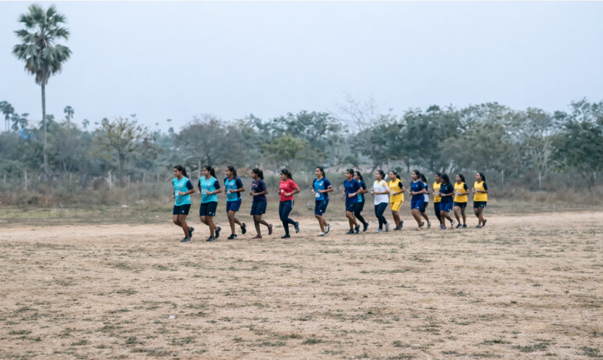
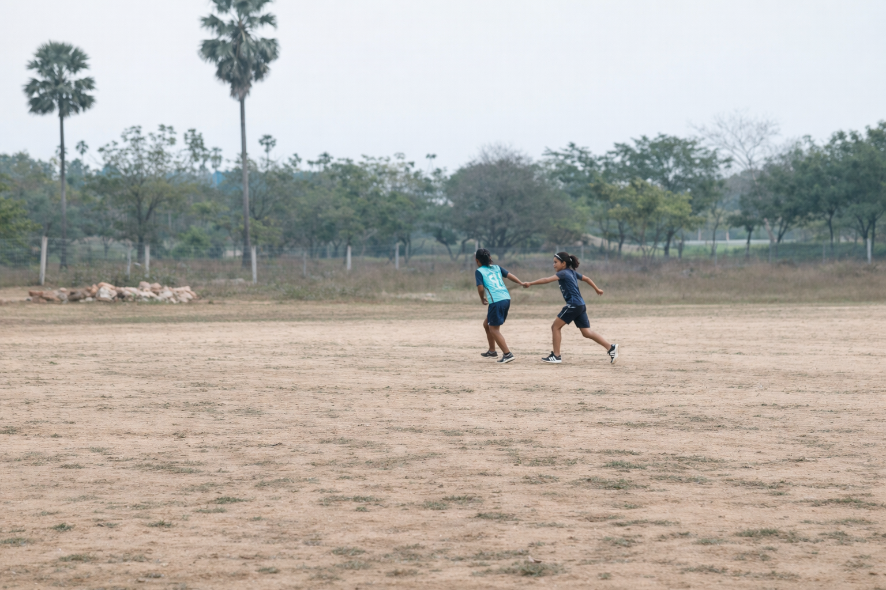
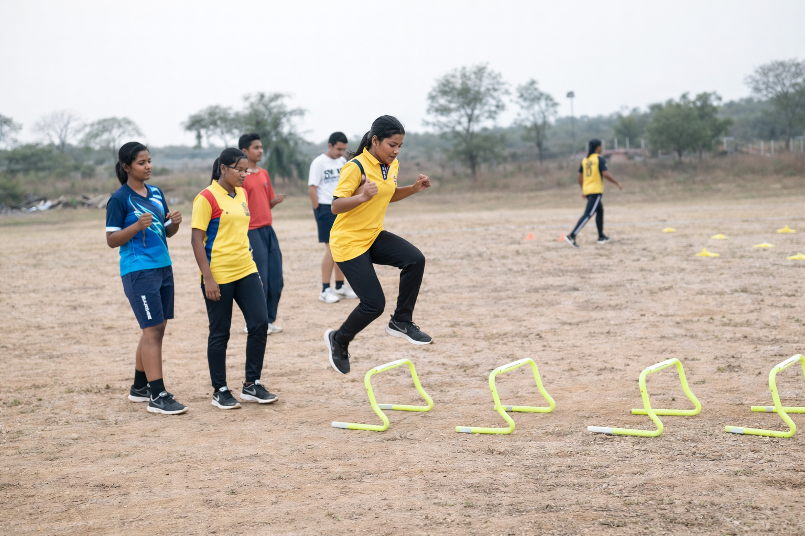
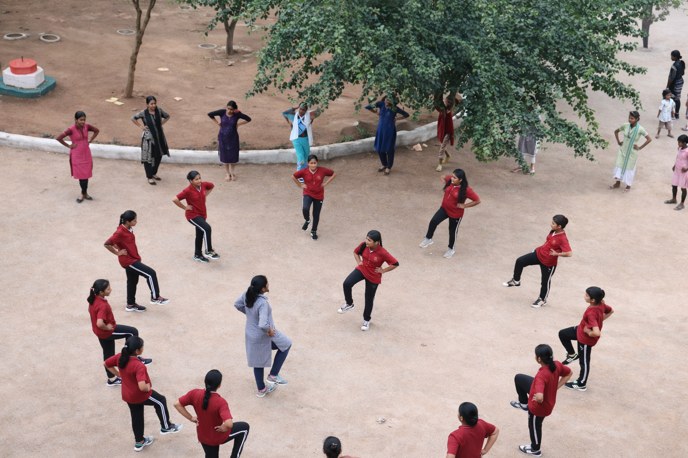
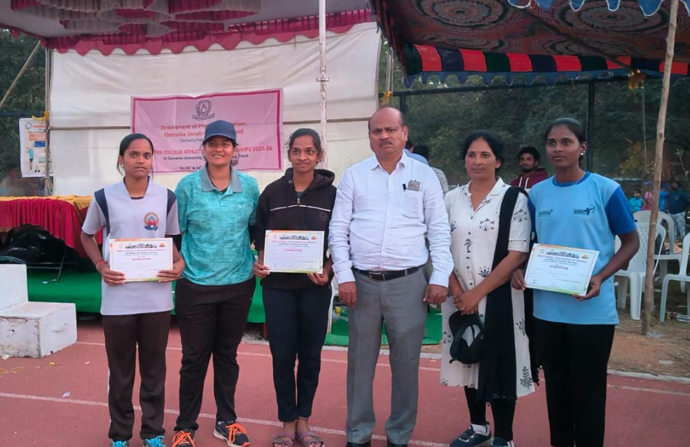

Athletics is a collection of sports that involve running, jumping, and throwing, and it is considered one of the oldest forms of organized sport. It has a rich history and was part of the ancient Ancient Olympic Games. Track events in athletics include sprints, middle-distance, and long-distance races, as well as relay races that test both speed and teamwork. Sprint races focus on explosive power, while middle- and long-distance races challenge endurance and strategy. Field events include jumping competitions such as long jump, triple jump, and high jump, along with throwing events like shot put, discus, javelin, and hammer throw. These activities require strength, precision, and proper technique, making training essential for success. Athletics competitions are organized worldwide under the guidance of the World Athletics, with major events including the Olympics and World Championships. Participating in athletics improves physical fitness, speed, strength, and coordination, while also enhancing mental discipline.